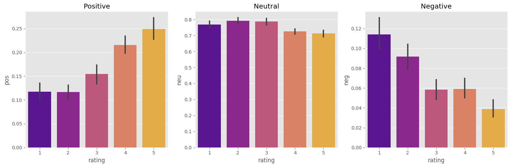
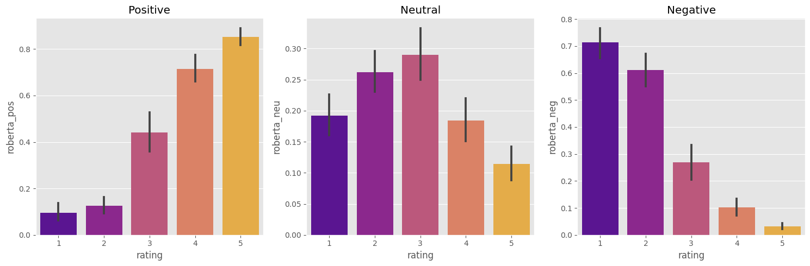
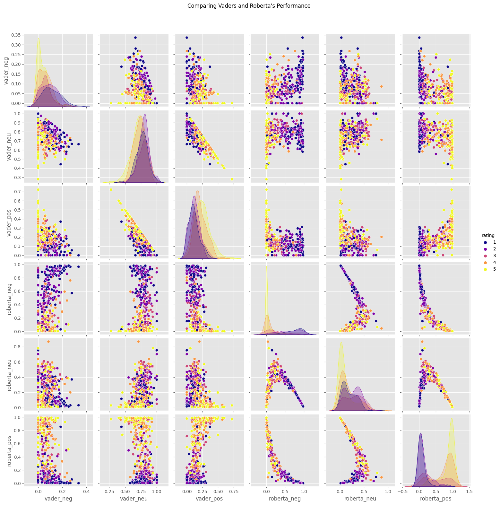
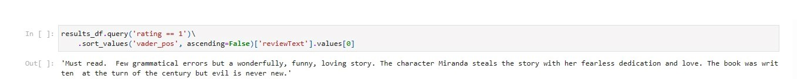
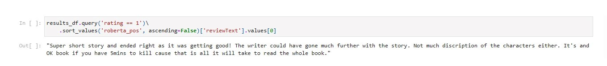
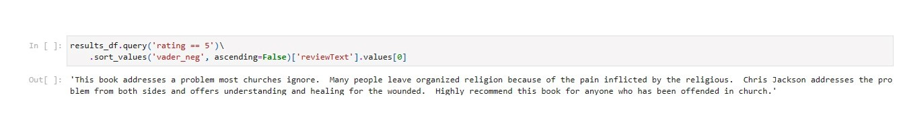

Compararing model performance of VADER and RoBERTa
Methodology
Selecting the first 500 entries
Made with Python
Dataset Used
"Amazon Kindle Book Review for Sentiment Analysis" Dataset link
Why sentiment analysis?
Sentiment analysis is a form of natural language processing that finds, identifies and quantifies emotional motivation in text.
It can be applied to marketing and product analysis purposes. [1]
In this project, I am going to compare the performances of VADER and RoBERTa in analysing book reviews published on Kindle.
Users' scores
In book reviews, it is a costume for users to rate books from 1 to 5 stars.
In this dataset, it is applied the same scoring system. Here users give a quantitative rating (stars) and a qualitative rating (reviews).
If we visualise the number of reviews by stars, the majority are rated positive (3 or more stars).
Scoring of VADER and RoBERTa
With "VADER" and "RoBERTa" models, the sentimental quantification is made with "polarity scores". The models will assign a rating to the emotional categories of "negative", "neutral" and "positive".
The figure shown below represents the polarity scores made by "VADER" model according to the stars given by users:

With "RoBERTa" model, the following polarity scores by star rating were created:

In each sentimental category, the “VADER” model tends to converge the scores of the reviews. And on average, it does not assign high scores in either “positive” or “negative” categories.
On the other hand, the “RoBERTa” model diverges the scores given by star. It is better at identifying emotional speech patterns than the “VADER” model.
Comparing Performances: VADER vs. RoBERTa
Looking at the figure below, the "RoBERTa" model is more confident rating sentiment than the "VADER" model.
Furthermore, the "RoBERTa" model can give scores that best match the star ratings given by users.

Examples where the models became confused
"VADER" - Identified as positive sentiment but is a 1-star review:

"RoBERTa" - Identified as positive sentiment but is a 1-star review:

"VADER" - Identified as negative sentiment but is a 5-stars review:

"RoBERTa" - Identified as negative sentiment but is a 5-stars review: